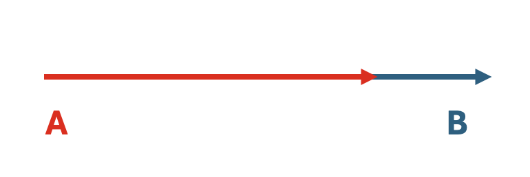
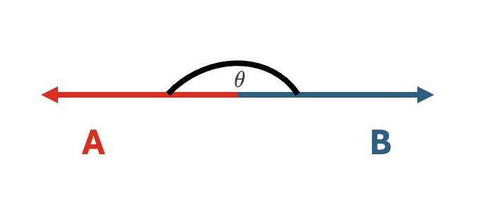
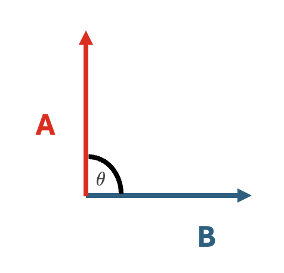
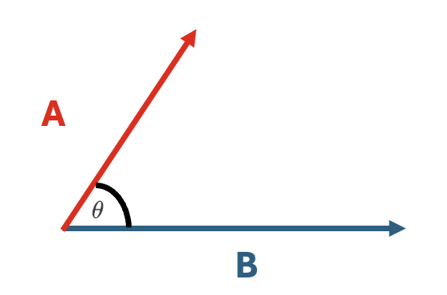
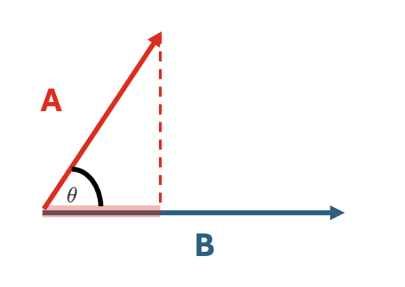

About a month ago, I began exploring different similarity measures. Continuing this quest, I wanted to better understand the relationship between Pearson correlation and cosine similarity.
At first glance, cosine similarity and Pearson correlation seem entirely unrelated beyond their ability to quantify relationships between variables. Indeed, cosine similarity is usually tied to geometry and the Pythagorean theorem, while Pearson correlation is a staple of statistics. However, cosine similarity and Pearson correlation are actually equivalent measures once data are mean-centered.
To see why this is the case, we will begin by looking at cosine similarity geometrically. We will then rewrite it algebraically, and finally we will compare it to Pearson correlation.
Conceptually, cosine similarity calculates the similarity between two vectors by comparing the angle between them, regardless of their length. To understand this intuitively, let's take three extreme cases:
Case 1:
\(\vec{A}\) and \(\vec{B}\) lie on the exact same line.

Here, the angle between \(\vec{A}\) and \(\vec{B}\) is zero.
So, \(\cos(\theta) = \cos(0) = 1\)
Case 2:
\(\vec{A}\) and \(\vec{B}\) lie on the exact same line, but point in the opposite direction.

Here, the angle between \(\vec{A}\) and \(\vec{B}\) is 180.
So, \(\cos(\theta) = \cos(180) = -1\)
Case 3:
\(\vec{A}\) and \(\vec{B}\) are totally perpendicular.

Here, the angle between \(\vec{A}\) and \(\vec{B}\) is 90.
So, \(\cos(\theta) = \cos(90) = 0\)
As mentioned, these are "extreme" examples just to gain some sort of an intuition. What if instead we consider two vectors \(\vec{A}\) and \(\vec{B}\) that share some directionality, but do not lie on the exact same line?

Sure, the cosine similarity is still the cosine of the angle \(\theta\) between \(\vec{A}\) and \(\vec{B}\), but perhaps we can operationalize this more carefully. One way to measure how much \(\vec{A}\) points in the direction of \(\vec{B}\) is to "project" \(\vec{A}\) onto \(\vec{B}.\)

The more that \(\vec{A}\) projects onto \(\vec{B}\), the more they point in the same direction. The more they point in the same direction, the more aligned they are, and the greater their cosine similarity.
Algebraically, the projection of \(\vec{A}\) onto \(\vec{B}\) is captured by the dot product and measures how much of \(\vec{A}\) lies in the direction of \(\vec{B}\).
This is expressed as:
\[ \vec{A} \cdot \vec{B} = (\lVert A \rVert \lVert B \rVert)\cos(\theta) \]
Which can be rewritten as: \[ \cos(\theta) = \frac{\vec{A} \cdot \vec{B}}{(\lVert A \rVert \lVert B \rVert)} \]
We can now see algebraically what we have been inferring from our extreme cases: that the cosine similarity does not depend on the magnitude (length) of the vectors.
We can rewrite the dot product in terms of its more algebraic definitions:
\[ \vec{A} \cdot \vec{B} = \sum_{i=1}^{n}{a_i}{b_i} \]
\[ \lVert A \rVert = \vec{A} \cdot \vec{A} = \sqrt{\sum_{i=1}^{n}{a_i}{a_i}} = \sqrt{\sum_{i=1}^{n}{a_i}^2} \]
\[ \lVert B \rVert = \vec{B} \cdot \vec{B} = \sqrt{\sum_{i=1}^{n}{b_i}{b_i}} = \sqrt{\sum_{i=1}^{n}{b_i}^2} \]
Taking the original equation, \[ \cos(\theta) = \frac{\vec{A} \cdot \vec{B}}{(\lVert A \rVert \lVert B \rVert)} \]
we can now plug the earlier algebraic equivalences:
\[ \cos(\theta) = \frac{\sum_{i=1}^{n}{a_i}{b_i}}{(\sqrt{\sum_{i=1}^{n}{a_i}^2}) (\sqrt{\sum_{i=1}^{n}{b_i}^2})} \]
Hmmm. This has now begun to look very similar to the Pearson correlation!
Spoiler: while cosine similarity uses raw values, Pearson correlation instead uses mean-centered variables -
\[ r = \frac{ \sum_{i=1}^{n}(x_i-\bar{x})(y_i-\bar{y}) }{% \sqrt{\sum_{i=1}^{n}(x_i-\bar{x})^2}\sqrt{\sum_{i=1}^{n}(y_i-\bar{y})^2}} \]
Critically, cosine similarity makes an implicit assumption: All of our computations thus far treat our vectors as defined relative to zero. This means that cosine similarity depends on the coordinate system. If we were to instead shift both vectors by adding a constant to each element, the cosine similarity would change. NB: This is something I struggled with intuitively, so it is best seen by choosing a couple of vectors and then adding some constant to them.
If we mean-center each of our vectors -- and thus change our coordinate system! -- \(\vec{A}\) and \(\vec{B}\), we arrive at the cosine-similarity equation that is equivalent to Pearson correlation!
\[ \cos(\theta) = \frac{\sum_{i=1}^{n}{(a_i - \bar{a})}{(b_i - \bar{b})}}{(\sqrt{\sum_{i=1}^{n}{(a_i - \bar{a})}^2}) (\sqrt{\sum_{i=1}^{n}{(b_i - \bar{b})}^2})} \]
This works because mean-centering shifts vectors so that their origin is at their mean. In other words, we are re-defining where "zero" lives. Now the alignment is measured in terms of deviation from the mean!
In conclusion, we have shown that Pearson correlation is cosine similarity computed on mean-centered data. What Pearson correlation (and mean-centered cosine similarity) really capture is how aligned vectors are relative to their means and not their absolute values.